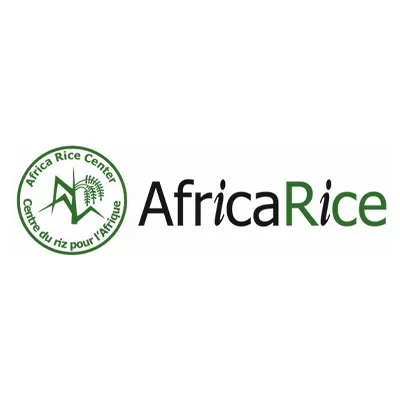
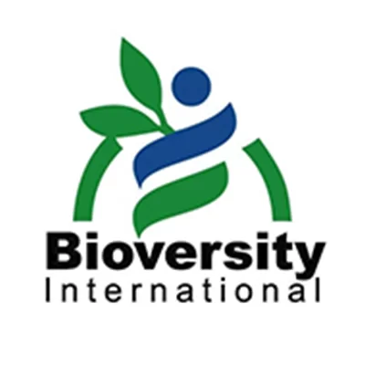
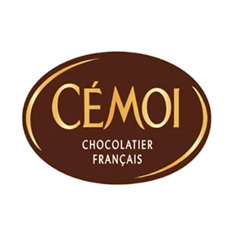
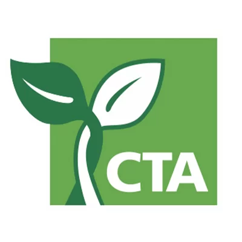
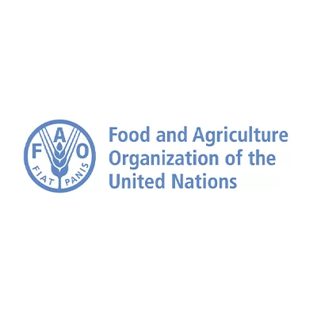
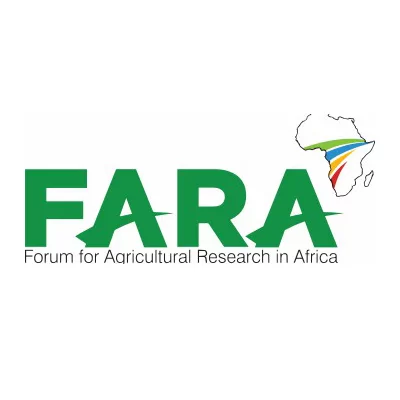
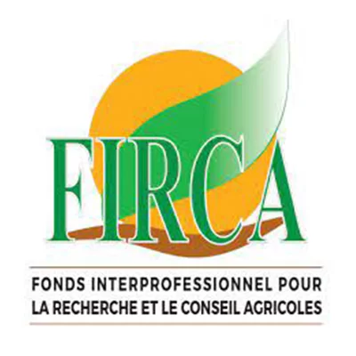
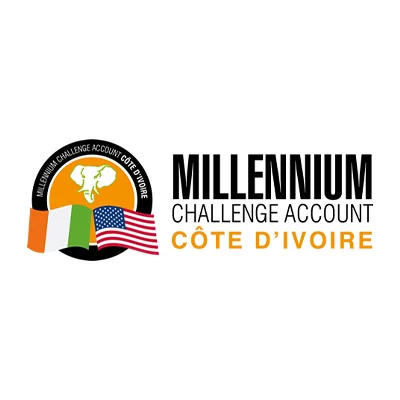
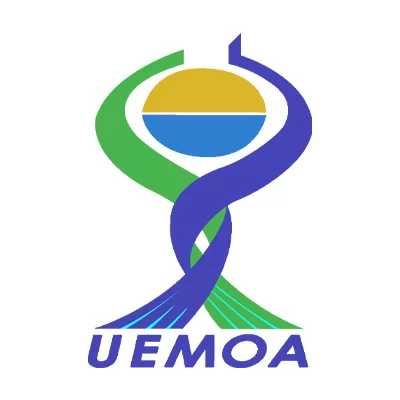
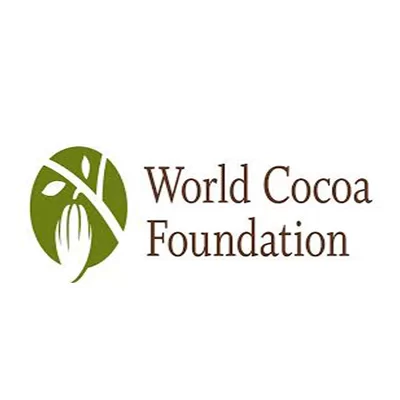

IMMOBILIER
Thematiques
PRODUITS
Card title
Some quick example text to build on the card title and make up the bulk of the card's content.
Go somewhereCard title
Some quick example text to build on the card title and make up the bulk of the card's content.
Go somewhereSERVICE
Card title
Some quick example text to build on the card title and make up the bulk of the card's content.
Go somewhereCard title
Some quick example text to build on the card title and make up the bulk of the card's content.
Go somewhereLES partenaires









